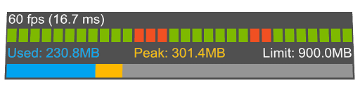
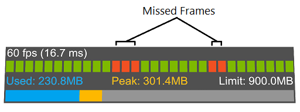
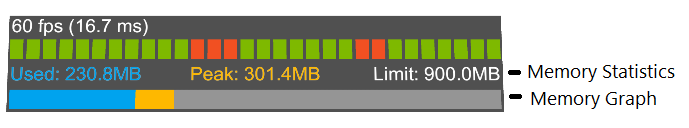

使用可视化分析器
可视化分析器（Visual Profiler）为混合现实应用程序的性能提供了易于使用的 应用程序内部的视图。所有混合现实工具包平台均支持分析器，包括：
- Microsoft HoloLens（第一代）
- Microsoft HoloLens 2
- Windows Mixed Reality沉浸式头显
- OpenVR
在开发应用程序时，当可视化分析器显示与当前视图相关的数据时，要关注场景的多个部分。
[!重要] 将注意力集中在场景中具有复杂对象，粒子效果或活动的部分。这些因素和其他因素通常会导致应用程序性能下降和不理想的用户体验。
可视化分析器接口

The Visual Profiler interface includes the following components:
帧率
界面的左上角是帧率，以每秒帧数为单位。为了获得最佳的用户体验和舒适度，该值应尽可能高。
特定的平台和硬件配置将在最大可达到的帧率中扮演重要角色。一些常见的目标值包括：
- 微软HoloLens：60
- Windows Mixed Reality Ultra: 90
每帧时间
帧率的右侧是在CPU上花费的每帧时间（以毫秒为单位）。为了达到前面提到的目标帧率，应用程序可以每帧花费以下时间：
- 60 fps：16.6毫秒
- 90 fps：11.1毫秒
计划在将来的版本中增加GPU时间。
帧率图
帧图提供了应用程序帧率历史的图形显示。

使用该应用程序时，寻找丢失的帧（missed frames），这些帧表示该应用程序未达到其目标帧率，可能需要优化工作。
内存利用率
显示内存利用率可以轻松了解当前视图如何影响应用程序的内存消耗。

使用该应用程序时，请查找总内存使用量。关键指标包括接近内存限制和使用率的快速变化。
自定义可视化分析器
可通过诊断系统配置文件自定义可视化分析器的外观和行为。请参见配置诊断系统获取更多的信息。